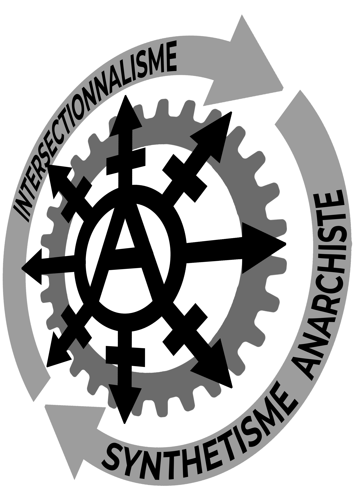

<section class="js-section_title header_slider theme-white">

	

<div  class="header_slider--header">
	<div class="media">
		
	</div>
	<div class="right" style="z-index: 1 !important;">

		<div class="title">Liaison commune de Lyon </div>

		<div class="link">
			<a href="mailto:communedelyon@federation-anarchiste.org"
				class="btn btn_black"
				target="">
				Envoyer un mail à communedelyon@federation-anarchiste.org
				<span class="icon-Arrow"></span>
			</a>
		</div>
		<div class="description" style="text-shadow: -2px -2px 0 #ffffff, 2px -2px 0 #ffffff, -2px 2px 0 #ffffff, 2px 2px 0 #fff;">
			
			Nous déclarons le lancement d’une nouvelle liaison de la Fédération Anarchiste à Lyon. Elle est à l’initiative de militant.es anarchistes locaux.les conscient.es de la nécessité de garder une porte d’entrée à la Fédération et surtout à l’anarchisme, 
			par le biais de l’autogestion et de l’action directe comme moyen d’action. 
		
		</div>
		<div class="subtitle">Déclaration d’intention Liaison Fédération Anarchiste de la Commune de Lyon</div>
			<div class="phone">

			{% include "Animation_reseau.html" %}
		</div>
		<div style="text-shadow: -1px -1px 0 #ffffff, 1px -1px 0 #ffffff, -1px 1px 0 #ffffff, 1px 1px 0 #ffffff;">
			<p style ="color : #cf7edd !important;">Nous sommes pour la plupart f&eacute;d&eacute;r&eacute;.e.s individuellement &agrave; la F&eacute;d&eacute;ration et nous souhaitons &agrave; l&rsquo;avenir constituer des groupes par activit&eacute;s et affinit&eacute;s. Nous croyons &agrave; la Synth&egrave;se &ndash; la collaboration des tendances diverses et vari&eacute;es de l&rsquo;anarchisme.<br><br>Nous souhaitons lutter contre le sectarisme militant qui gangr&egrave;ne aujourd&rsquo;hui la plupart des organisations. Pour ce faire nous souhaitons participer aux associations locales et faire du concret, dans une volonté de solidarité et d'entraide. &nbsp; &nbsp;</p>
			<p style ="color : #cf7edd !important;" ><strong>Une liaison pour rentrer en contradiction avec le pouvoir politique Etatique et &eacute;conomique</strong></p>
			<p style ="color : #cf7edd !important;">Une Liaison au croisement des activit&eacute;s et des id&eacute;es. Une coop&eacute;ration de nos radicalit&eacute;s militantes &agrave; travers l&rsquo;outil f&eacute;d&eacute;ral dans un but commun de lutte contre l&rsquo;Etat et les autoritarismes.<br>
			<br><strong>Vers le r&eacute;seau autogestionnaire</strong>
			<br>Nous souhaitons &ecirc;tre en lien avec les organisations de lutte, de propagande et des organes &eacute;conomique et sociaux autog&eacute;r&eacute;s. Qu&rsquo;elles soient radicales ou non. La liaison est un outil de mutualisation de nos ressources et de nos affinit&eacute;s.<br>
			<strong><br>Nos intentions personnelles et militantes</strong>
			<br>La liaison est compos&eacute;e de membres ayant des affinit&eacute;s diverses et vari&eacute;es. Elle est l&agrave; pour nous, elle nous permet de nous cultiver, de nous &eacute;panouir et de militer &agrave; 
			la fa&ccedil;on de tous.tes &agrave; chacun.es.<br><br>C&rsquo;est aussi l&rsquo;occasion de donner vie &agrave; des projets musicaux engag&eacute;s, d&rsquo;arts et d&rsquo;&eacute;critures libres. 
			Dans lesquels les neuro-atypies et l&rsquo;identit&eacute; de genre aient leur place.<br><br>&nbsp; &nbsp; &nbsp; &nbsp; &nbsp; &nbsp; &nbsp; &nbsp; &nbsp; &nbsp; &nbsp; &nbsp; &nbsp; &nbsp; &nbsp; &nbsp; &nbsp; &nbsp; &nbsp; &nbsp;<strong> </p>
			<p style="text-align: center;color : #cf7edd !important; margin-bottom: 30%;"><strong>&nbsp;&laquo; A chacun.e selon ses besoins,<br>de chacun.e selon ses moyens ! &raquo;</strong><br>Ainsi, c&eacute;l&eacute;brons chacune de nos luttes.</p>
		</div>


		<script type="module">
		
		import { createTimeline, utils, waapi } from 'https://esm.sh/animejs';
		const [ $restartButton ] = utils.$('.restart');

		const Animation_first = createTimeline({
		loop: true,
		alternate: true,
		delay: 500,
		})
		.add('.first',   { x: '10rem'})
		.add('.first',   { scale: ['1', '0'] },1500);


		const Animation_second = createTimeline({
		loop: true,
		alternate: true,
		delay: 1000,
		})
		.add('.second', { x: '10rem' })
		.add('.second', {scale: ['1', '0'] }, 1500);

		const Animation_last = createTimeline({
		loop: true,
		alternate: true,
		delay: 1500,
		})
		.add('.last', { y: '15rem' })
		.add('.last', {scale: ['1', '0'] }, 1500);


		const restartTimeline = () => {
		Animation_first.seek(0).play();
		console.log(Animation_first.currentTime);
		Animation_second.seek(0).play();
		console.log(Animation_second.currentTime);
		Animation_last.seek(0).play();
		console.log(Animation_last.currentTime);
		}
		
		$restartButton.addEventListener("click", restartTimeline);
		</script>
		<div class="phone">
			<div class="docs-demo-html">
			
				<div id="draggables" class="grid">
				<div class="example">
						<div class="title">Nos activités et nos pensées</div>
						<button class="button restart" style="width:30px; height: 20px;">test</button>
						<div class="example-content example-content-vertical transformed-example">
						<div class="margin margin-overlay" style="box-shadow: 0 0 0 1px rgba(255, 255, 255, 0);"></div>
							<div id="container-no-scroll" class="container margin">
									
										<div class="grid">

										
											<div class="draggable square last" style="background-color: #cf767600;">
												
												
												
											</div>	
											<div class="draggable square second" style="background-color: #d195db00;">
												
												
												
											</div>
											<div class="draggable square first" style="background-color: #cfcecd00;">
												
												
											</div>

											<a href="articles/Boulangerie_ile.html">
												<div class="square" style="background-color: #df9f6a8f; transform: translateX(10rem) translateY(-5rem);border: 5px dashed #db7929; ">
													
												</div>
											</a>
											
											<a href="Activités_locales.html">
												<div class="square" style="background-color: #bdb0b0cb; transform: translateX(10rem) translateY(-15rem); border: 5px dashed #837878; ">
													
												</div>
											</a>	
											
											<a href="articles/Proposition_10_sept.html">
												<div class="square" style="background-color: #c991cecb; transform: translateY(-10rem); border: 5px dashed #df5cebcb;">
													
												</div>
											</a>

											
											<div class="square description" style="background-color: #c991ce00; transform: translateX(15rem) translateY(-25rem);  margin-bottom: 0; ">
												Syndicalisme CNT-SO-AIT
											</div>
											<div class="square description" style="background-color: #c991ce00; transform: translateX(15rem) translateY(-25rem); ">
												Boulangerie autogéreé à l'île égalité
											</div>
											<div class="square description" style="background-color: #c991ce00; transform: translateX(5rem) translateY(-25rem); ">
												Intersectionnalité et 
												confédéralisme
											</div>
										</div>
									
								
								
							</div>
						</div>
					</div>
				</div>

			</div>	
		</div>

	</div>
</div>


</section>